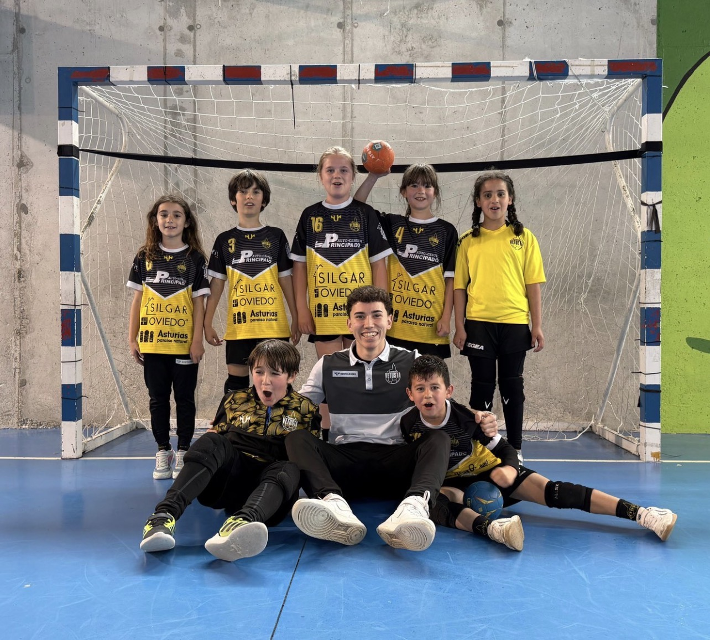

Este sábado el Balonmano Vetusta tiene el honor de organizar la Fase Final del Campeonato de Asturias en categoría Benjamín B (mini balonmano), que se disputará en el polideportivo del CP La Gesta de Oviedo.
El club estará representado por uno de los equipos de sus escuelas, el CP Germán Fernández Ramos, que se jugará la medalla de bronce frente al CP Martínez Blanco - CP El Llano (Deportivo Estadio) a las 12:15. La final se disputará a las 13:20 entre el CP Los Pericones A y el CP Los Pericones B (Balonmano Gijón).
Ambos encuentros podrán seguirse en directo a través del canal de YouTube del club.

¡Pase lo que pase, nuestros niños y niñas del CP Germán Fernández Ramos han hecho una temporada fantástica!